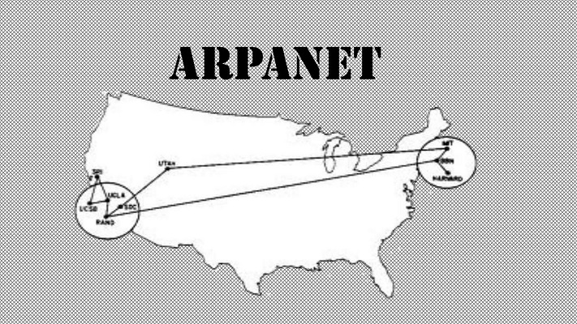
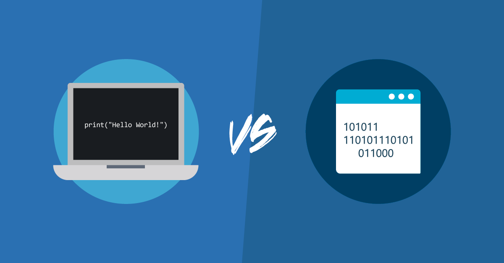

Em 1969, nasceu o princípio básico do que viria a ser uma das grandes invenções do homem no último século.
Atualmente, é complicado imaginar a vida sem redes sociais, e-mails e sites de buscas. No entanto, no início da história da Internet, o objetivo estava longe de ser negócios ou entretenimento. Tudo começou na área militar dos Estados Unidos, com a intenção de ajudar a proteger o país nas guerras.
Para conhecer um pouco mais a fundo a história da web veja nesse link sobre o primeiros computadores.
Os conceitos militares por trás da Internet começaram a surgir em meados dos anos 50, mas só na década de 60, com o mundo polarizado entre Estados Unidos e URSS que a ideia se desenvolveu. Cientes de poder da comunicação, os EUA criaram um sistema de descentralização de suas informações no Pentágono para evitar que possíveis ataques causassem a perda irreparável de documentos do governo.
Em 1962, o engenheiro Joseph Licklider, do Instituto Tecnológico de Massachusetts (MIT), já falava na criação de uma Rede Intergalática de Computadores. Sete anos depois, ficou estabelecido o marco do “nascimento da Internet”, com a criação da ARPANET, a rede de conexão da DARPA, Agência de Projetos de Pesquisa Avançada dos Estados Unidos.
Esta década foi fundamental para a mudança de padrão de conexão que permitiu que os atuais protocolos de Internet nascessem. São os protocolos TCP/IP, vindos de trabalhos experimentais em cooperação entre a DARPA e outras agências.
A primeira descrição de protocolos TCP foi feita no ano de 1973, pelos especialistas Net Vinton Cerf e Bob Kahn. O uso do termo “Internet” para uma rede TCP/IP global se deu em dezembro de 1974, com a publicação da primeira especificação completa do TCP, assinada por Vinton Cerf, Yogen Dalal e Carl Sunshine, na Universidade de Stanford.

O dia 1 de janeiro de 1983 marcou a entrada no ar da primeira rede de grande extensão baseada em TCP/IP. Todos os computadores que usavam a tal ARPANET trocaram os antigos sistemas de pacotes pela nova tecnologia. Dois anos depois, nasceu a National Science Foundation Network, um conjunto de redes universitárias interconectadas em 56 kilobits por segundo (kbps).
O Protocolo de Internet (Internet Protocol) permitia que a transição de dados entre redes. Assim, todas as redes conectadas pelo endereço IP na Internet poderiam navegar pelos arquivos e trocar mensagens. Então, nasceram os backbones, computadores que fazem estas tarefas. Estava estabelecido o modo de conexão.

Em 1992, o cientista Tim Berners-Lee criou a World Wide Web. A rede nasceu na Organização Europeia para a Investigação Nuclear, que propôs a criação dos hipertextos para permitir que várias pessoas trabalhassem juntas acessando os mesmos documentos.
Também nos anos 90, a empresa norte-americana Netscape criou um protocolo HTTPS (HyperText Transfer Protocol Secure), que garante o envio de dados criptografados pela web. Com isso, estava nascendo a Internet atual. E o interesse mundial em torno desta nova ferramenta foi enorme, causando um grande “boom” na década de 90, quando as pessoas começaram a ter PCs e acesso, ainda discado, à grande rede.
Após o surgimento da Internet para o público em geral, era necessário consolida-la entre as pessoas. E esta tarefa não foi muito difícil dada às facilidades impostas para aquisição de computadores e também às grandes novidades que a web recebeu nos anos 2000. A tecnologia evoluiu muito e, assim, permitiu avanços significativos.
A Internet discada deu lugar à Banda Larga e até à conexão no seu próprio celular, com a rede 3G (e agora 4G). Ao invés de uma ferramenta de difícil acesso e ainda crescendo, a Internet virou praticamente uma necessidade diária, seja no dia a dia das empresas ou na casa de um usuário que busca entretenimento ou faz pesquisas para o dever de casa.
"A web não está concluída, é apenas a ponta do iceberg. As novas mudanças irão balançar o mundo ainda mais."Tim Berners-Lee Início
Tim Berners-Lee
O Client é a parte que interage com o usuário, possui a interface que o usuário utiliza para requisitar as tarefas ao servidor, sendo chamado de front-end da aplicação.
O processo CLIENT realiza o envio das mensagens fazendo algum pedido ao servidor.
Os processos Clients gerenciam as atividades dos usuários e realizam as validações dos dados informados por estes.
É o processo que responde a uma mensagem solicitando a realização de alguma tarefa por parte do Client. O processo servidor é chamado de back-end.
O processo Server pode oferecer serviços a muitos clientes, realiza pesquisas, filtragens e atualizações em bancos de dados.
Os serviços podem ser realizados diretamente pelo processo Server ou através de processos escravos criados por este para atender cada pedido do cliente, o que libera o processo mestre do Server para receber outras solicitações

Você já viu pessoas que trabalham com tecnologia olhando para uma tela com vários códigos que parecem não fazer sentido? Bem, essa é uma linguagem de programação. A expressão se refere a um conjunto de regras e instruções que um programador constrói para gerar programas e softwares que serão processados por um computador, dispositivo móvel ou outro equipamento.
Quando estruturada, essa língua forma o código fonte de um software e informa a uma ferramenta quais ações ela deve tomar, por exemplo.
Uma linguagem de programação pode ser de nível alto ou baixo. As chamadas de alto nível possuem uma construção linguística que se aproxima mais da forma humana de se comunicar.
Já a linguagem de baixo nível, utiliza comandos mais complexos e o código binário, que são sequências combinadas dos números 0 e 1. Isso otimiza a comunicação com a máquina, aumentando a agilidade do processo. Os diferentes tipos funcionam melhor de acordo com o objetivo que se busca atingir.

As linguagens server-side são linguagens que o SERVIDOR entende. Isso quer dizer que vai escrever um código onde o servidor vai processá-lo e então vai mandar para o seu navegador a resposta. As linguagens client-side são linguagens onde apenas o seu NAVEGADOR vai entender.
Exemplos:
Essas são linguagens Client Side
Essas são linguagens Server Side
HTML (Linguagem de Marcação de HiperTexto) é o bloco de construção mais básico da web. Define o significado e a estrutura do conteúdo da web. Outras tecnologias além do HTML geralmente são usadas para descrever a aparência/apresentação (CSS) ou a funcionalidade/comportamento (JavaScript) de uma página da web.
"Hipertexto"refere-se aos links que conectam páginas da Web entre si, seja dentro de um único site ou entre sites. Links são um aspecto fundamental da web. Ao carregar conteúdo na Internet e vinculá-lo a páginas criadas por outras pessoas, você se torna um participante ativo na world wide web.
O HTML usa "Marcação" para anotar texto, imagem e outros conteúdos para exibição em um navegador da Web. A marcação HTML inclui "elementos" especiais, como head, title, body, header, footer, article, section, p, div, span, img, aside, audio, canvas, datalist, details, embed, nav, output, progress, video, ul, ol, li e muitos outros.
Um elemento HTML é separado de outro texto em um documento por "tags", que consistem no nome do elemento entre "<" e ">". O nome de um elemento dentro de uma tag é insensível a maiúsculas e minúsculas. Isto é, pode ser escrito em maiúsculas, minúsculas ou um mistura.

Isso é um pouco do conhecimento adquirido, caso queira ter mais conhecimento vou deixar alguns links para pesquisas.